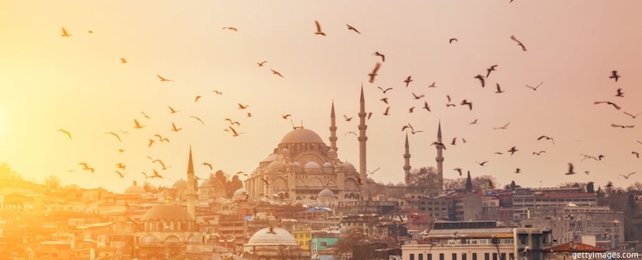

| Милан удерживает статус европейской столицы моды, культуры и спорта, но из-за смещения делового интереса в пользу Лондона и неевропейских столиц, занимает лишь 15 строчку в рейтинге. Учитывая обилие традиционных ресурсов для отдыха и стабильный спрос на Италию среди туристов, ожидать большого изменения показателей в следующем году не стоит. | |
| Мекка – особенный город этого списка, который стал одним из самых популярных среди иностранцев благодаря собственному культурному статусу. Миллионы мусульманских паломников ежегодно отправляются в священный город, и, по прогнозу составителей индекса, их число по итогам 2018 года вырастет на 7,4%. Мекка – второй после Дубая город по общему объёму потраченных денег — $18,45 млрд. Но ежесуточные расходы туриста здесь в разы скромнее – всего $135. | |
| Анталья – один из тех городов, который «делает кассу» за счёт относительно узкой специализации. Пляжный туризм занимает в экономике такую роль, что другие отрасли незаметны. Учитывая цифры, полученные MasterCard, можно сказать, что Анталья – главный курорт мира для тех, кто хочет провести отпуск под средиземноморским солнцем. | |
| Результатом слияния двух культур и континентов на берегах Босфорского пролива, Стамбул стал мегаполисом с гигантским историческим бэкграундом. Основной спрос иностранцев — обычный вид отдыха, но в общей доле немало деловых гостей. Столица Турции – один из самых доступных в финансовом плане городов в этой двадцатке. Среднестатистический посетитель задерживается в Стамбуле на 5,8 ночи, а каждый день ему обходится в $108. |  |